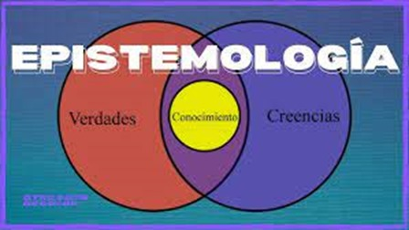

Tipos de verdad
Verdad moral
La verdad moral es aquella que orienta la conducta humana hacia el bien, distinguiéndola de la simple verdad teórica. Mientras que el conocimiento teórico busca comprender y describir la realidad tal como es, la verdad moral implica un compromiso con la acción, pues conocer el bien implica la responsabilidad de practicarlo. El carácter práctico de la verdad moral se debe a su relación con la voluntad. No es suficiente con reconocer lo correcto; es necesario quererlo y actuar en consecuencia. De ahí que la moralidad no se reduce a un conjunto de normas externas, sino que requiere de una conciencia bien formada, capaz de discernir lo justo en cada situación.
Verdad religiosa
Se fundamenta en la relación esencial entre la creación y Dios. No es un elemento accesorio, sino una característica intrínseca de todas las cosas, que existen y actúan en dependencia de Dios. El ser humano, por su capacidad racional y libertad, es el único que puede tomar conciencia de esta verdad, pero su entendimiento es limitado e imperfecto. La verdad religiosa implica reconocer el orden divino en todo lo creado y orientar todas las acciones hacia Dios. Además, en el plano sobrenatural, la verdad religiosa no depende de la interpretación humana, sino que está determinada.
Verdad Historia
La Historia, antes vista como un relato moral o heroico, comenzó a transformarse en una ciencia en el Renacimiento. Este cambio se atribuye a avances como los descubrimientos geográficos y el desarrollo de la cartografía, que exigían una mayor veracidad y datos verificables. Tierno destaca que, inicialmente, la Historia se concebía como una forma de documentar la verdad, construyendo una imagen precisa del pasado. Sin embargo, con el tiempo, la Historia perdió este carácter objetivo, dando paso a la relativización e interpretación de los hechos. Hoy en día, el conocimiento histórico se basa en una multiplicidad de interpretaciones, lo que ha conducido a una mayor flexibilidad sobre lo que se considera "verdad histórica". Esto ha abierto el camino a la posverdad, donde las interpretaciones históricas son más importantes que los hechos.
Verdad Política
La verdad política se refiere a una verdad que está vinculada con la acción política y la vida pública, pero que no debe ser entendida como absoluta o inmutable. Es una verdad que está sujeta a la crítica, al contraste con diferentes puntos de vista y a la reflexión colectiva. Es fundamental para la cooperación interpersonal y la construcción de un mundo público confiable. Sin embargo, en los regímenes totalitarios, la verdad es manipulada y distorsionada a través de la mentira, lo que destruye los referentes confiables y socava la acción política genuina.
Verdad Epistemológica
La verdad epistemológica, en este contexto, se refiere a la necesidad de que el proceso judicial logre establecer una comprensión verídica de los hechos, basada en el conocimiento experto y científico, pero también influenciada por la valoración crítica que hace el juez de las pruebas presentadas. En los casos complejos, la verdad no se logra automáticamente a través de la prueba pericial, sino que depende de cómo se configura y se valora esa prueba dentro del proceso judicial. "Las pruebas servirían para hacer creer que el proceso determina la verdad de los hechos, porque es útil que los ciudadanos lo piensen, aunque en realidad esto no suceda y quizás precisamente porque en realidad eso no sucede." (Taruffo, 2005, p. 81)
Verdad Informática
La verdad informativa se refiere a la necesidad de que la información proporcionada a la sociedad sea exacta, veraz y confiable. Es un concepto estrechamente vinculado al derecho a la información, entendido como un derecho humano fundamental que permite a las personas acceder, investigar y difundir información. Este derecho solo puede ser ejercido adecuadamente si la información que se ofrece es verdadera, ya que la falsedad, la incompletitud o la manipulación de datos obstruyen gravemente la libertad y la toma de decisiones informadas por parte de los ciudadanos. La verdad informativa no se limita solo a la veracidad de los hechos, sino que también implica una responsabilidad ética y profesional en su divulgación, especialmente en los medios de comunicación. Estos tienen la tarea de asegurar que la información que difunden sea auténtica, precisa y útil para que los individuos puedan participar activamente en la sociedad, tomar decisiones informadas y contribuir al bienestar colectivo.
De Santiago Freda, M. (s.f.). El problema de la verdad informativa: una perspectiva filosófica iusinformativa.
"La verdad está estrechamente ligada al proceso informativo entero y a la realización del derecho humano a la información.
En casi la totalidad de los códigos deontológicos periodísticos y en las obligaciones jurídicas que conlleva el ejercicio
de dicha prerrogativa está presente. Se trata de la característica más valorada de la información y, en consecuencia,
constituye un límite interno en su relación con la potestad del ser humano de recibirla, investigarla o difundirla." (p. 2).
Deja tu Comentario